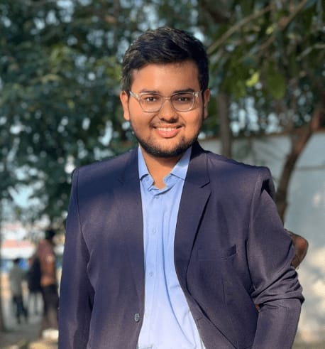

AI Researcher & MS student at HSLU, Switzerland — blending computer vision, drone-based imaging, and machine learning with real-world innovation. From ISRO to IEEE publications, turning research into impact.

I am a Master's student in IT, Digitalization & Sustainability at Lucerne University of Applied Sciences and Arts (HSLU), Switzerland. With research experience spanning AI, Robotics, and Computer Vision, I bring a unique blend of academic rigor and hands-on engineering.
My journey has taken me from building drone-based imaging systems at ISRO (India's space agency) to developing automated glass facade monitoring at Universiti Teknologi PETRONAS in Malaysia. I'm passionate about deploying lightweight, efficient AI models on edge devices — making intelligence accessible where it matters most.
With published work in IEEE conferences and expertise across Python, PyTorch, TensorFlow, and embedded systems, I bridge the gap between deep learning research and real-world robotic applications.